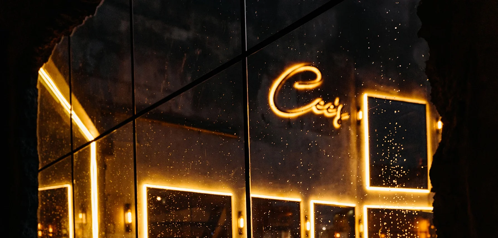
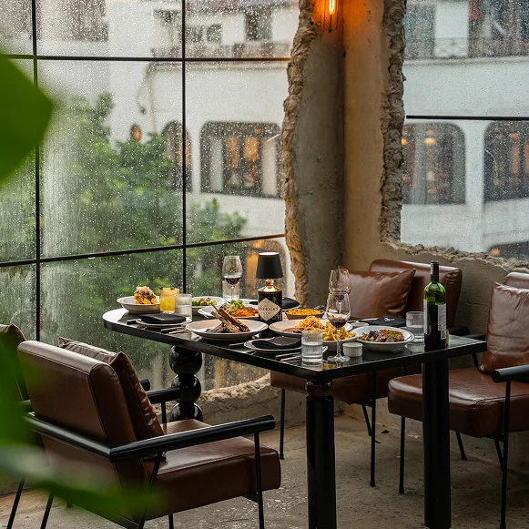
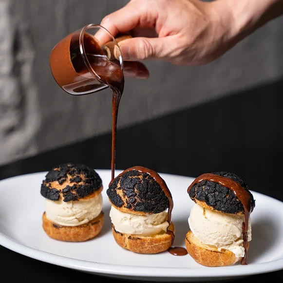
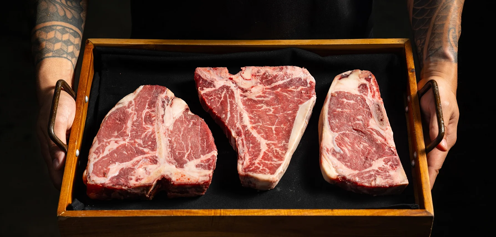
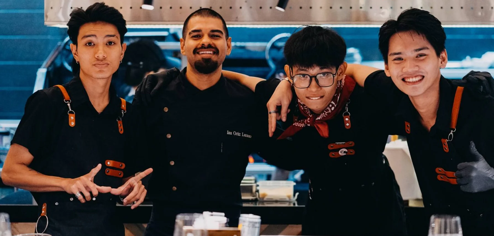

About Cee’s
Cee's Eatery & Bar brings the vibrant essence of Latin American
cuisine to the heart of Ho Chi Minh City, with locations in
District 1 and a newly renovated spot in District 7. Since
opening in 2018, we’ve established ourselves as a top dining
destination, recognized by Asia’s 50 Best Discovery and honored
with Michelin Select in 2023 and Michelin Bib in 2024. Our
venues combine culinary excellence with a lively atmosphere,
where each dish and cocktail are crafted to captivate the
senses. At Sol Kitchen & Bar, we deeply value our customers and
their support, which has been vital to our success. Please join
us and experience the exceptional flavors and welcoming ambiance
at either of our two locations.

Mission
To be recognized as a distinguished industry leader in
Vietnam’s Food & Beverage landscape — a brand that
consistently sets new standards of excellence. We are
committed to placing “unreasonable hospitality” at the heart
of everything we do, ensuring every valued guest receives not
only exceptional service, but also heartfelt, memorable
experiences that go far beyond expectations.

Vision
The vision is to become one of Vietnam’s leading trendsetters
in the hospitality industry — a pioneering force that inspires
innovation, professionalism, and excellence across the market.
We are committed to creating meaningful career growth
opportunities for our community, empowering individuals to
develop long-term, fulfilling pathways in hospitality. At the
same time, we aim to elevate service standards nationwide,
shaping a more refined, customer-centric, and world-class
service culture for Vietnam’s future.

Our Cuisine
At Cee's Eatery & Bar, our culinary inspiration is deeply rooted
in the diverse regions of Latin American. Our menu reflects the
rich tapestry of flavors that span this vibrant part of the
world. Drawing from the culinary traditions of different
countries, our chefs have brought their regional favorites to
life, creating a dining experience that is both authentic and
innovative.
We take immense pride in using only the highest quality
ingredients. Some of our signature dishes feature premium
selections like Iberico pork ribs, Wagyu beef for our sizzling
fajitas and carne asada, and handcrafted empanadas made fresh
in-house. Our seafood platters are made with the freshest
seafood, ensuring freshness in every bite. Just as important as
our quality meats is our commitment to sourcing local produce,
guaranteeing that every dish is as fresh and flavorful as
possible.

Our menu also highlights unique creations like the truffle
mushroom quesadilla and our soft-shell crab chicharron—dishes
that have quickly become fan favorites, blending rich, bold
flavors with inventive twists on Latin cuisine. At At Cee's
Eatery & Bar, our mission is to bring the authentic tastes of
Latin American to the heart of Ho Chi Minh City, offering a
culinary journey where every flavor tells a story, celebrating
the diversity and richness of this extraordinary region.
Team
At the heart of Cee's Eatery & Bar is a dynamic team of culinary
experts who bring passion, experience, and creativity to our
kitchen. Leading the way is Adrian Chong, our Executive Chef and
owner. Originally from Malaysia, Adrian began his culinary
journey at the young age of 15. After honing his skills in
kitchens across Malaysia and Singapore, he seized the
opportunity to bring his vision to life in Ho Chi Minh City by
founding Sol Kitchen & Bar.
oining Adrian is Christian Corachea, a talented chef from the
Philippines who has made his mark in Ho Chi Minh City’s vibrant
culinary scene before finding his home at Cee's Eatery & Bar.
Christian’s deep understanding of flavors and dedication to
excellence make him an invaluable member of our team.
Rounding out our leadership trio is Ian Ortiz, hailing from
Mexico City. Ian’s culinary journey has taken him through the
kitchens of Mexico and Europe, enriching his expertise and
bringing a global perspective to our menu. His addition to our
team adds depth and authenticity to our Latin American- inspired
dishes.
Together, Adrian, Christian, and Ian lead our entire talented
culinary team with a shared commitment to creating exceptional
dining experiences. Their combined talents and unique
backgrounds ensure that every dish at Sol Kitchen & Bar is
crafted with care and innovation.
